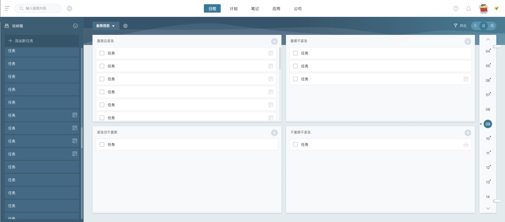
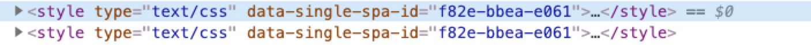

背景
日事清的web端从诞生之初就一直用的backbone进行开发，当时的包管理器还用的require.js，构建方案还是grunt。后来在2016年，我们把构建方案换成了webpack，但是考虑到整个团队的学习成本，也考虑到项目的稳定性，再加上为了快速上线，视图框架还是用的Backbone，这个架构也就一直用到现在。
我们也鼓励团队成员用vue开发新的项目，在对比backbone和vue的开发效率的时候，我们发现，vue的效率高的不止一点点，且开发体验要比backbone好太多，所以什么时候能把backbone换成vue一直是我们的心愿。但没有业务场景，且现在项目又稳定，我们是绝不可能轻易迈出这一步的。
机会出现在了2019年10月份，日事清web端准备大版本迭代，新版的设计图和之前的几乎完全不一样，新增了非常多的功能，已有功能也做了非常多的优化。经过讨论，我们决定对项目进行重构，重构就意味着我们有机会引入新技术。
但是此次重构有点特别，如果用过日事清的小伙伴应该知道，日事清分：日程，计划，笔记，应用，公司5个模块，但日程不参与此次重构，其他几个模块都需要分批进行重构，且最好是重构完一个模块，就上线一个模块。也就是说，如果我们想用vue来重构，必须要backbone和vue共存一段时间，然后再逐步把所有的backbone替换掉。

最终我们决定引入微前端的架构，选择微前端可以非常好的解决这次重构遇到的问题：
- 多个技术框架可共存使用，即使用vue不会对已有的backbone造成影响
- 可灵活的进行渐进式重构
- 进行重构的模块可以选择新的技术方案
- 后续重构的模块可独立发布
方案选择
目前业界比较成熟的微前端方案主要是两种：iframe和singleSpa
iframe:
日事清之前有部分功能就是用iframe的方式嵌套在页面里的，但是这种嵌套的方式有很多限制：
- iframe内部的事件不能冒泡出来，导致很多交互都需要postMessage来对接，非常麻烦
- ifame内部的全局弹窗不能全尺寸弹出，影响用户体验
singleSpa:
开源项目single-spa，它的实现思路是：一个主应用和若干个子应用
主应用：负责子应用的注册、挂载和销毁
子应用：提供三个接口：bootstrap, mount, unmount供主应用调用
我们最终选择了singleSpa，主要原因是：
- 子应用可以挂载在主应用的某个元素下面，可以和主应用共享一个执行环境
- 子应用的注册、挂载和销毁逻辑相对简单，如果放到脚手架里，所有子项目都可以共用
实践
路由管理 & 子应用注册
我们需要管理3部分的路由：
- 原有的backbone路由
- singleSpa注册子应用的路由
- 子应用内部的路由
我们原有的backbone的路由的对应关系是这样的：
| 模块 | 路由 |
|---|---|
| 日程 | /app/todo |
| 计划 | /app/kanban |
| 笔记 | /app/doc |
| 应用 | /app/application |
| 公司 | /app/company |
这次除了日程模块之外，其他几个模块都会重构，也即其他几个模块的路由都不走backbone。
singleSpa支持通过路由的方式来判断是否挂载子应用，且引入singleSpa并不会影响backbone的路由的正常工作，所以我们只用把日程之外的其他几个模块的路由从backbone移除，然后把其他几个模块当做子应用注册到singleSpa即可。
以注册笔记模块为例，下面是注册部分的代码：
1 | import * as singleSpa from 'single-spa'; |
每当有路由变化的时候，singleSpa.registerApplication的第三个参数就会执行，然后判断路径是否是/app/doc开头的，如果是，则说明需要挂载笔记这个子应用。
在判断可以挂载子应用之后，主应用会创建一个Div容器，然后把这个容器传给子应用，子应用在执行挂载逻辑的时候，就会把整个应用都挂载在这个Div里面。
大家可能有注意到，代码里有用到一个全局变量System，这个是systemjs暴露出来的，用来加载线上的js模块，后面讲怎么发布的时候会详细讲到。
在笔记子应用里需要暴露出single-spa挂载和销毁要用到的三个周期函数：
1 | import Vue from 'vue' |
在mount的时候初始化子应用的入口vue组件，并挂载到主应用那边传过来的一个div下面
在unmount的时候，执行$destroy，销毁应用
上面提到，我们需要管理3部分路由，最后一部分子应用内部的路由，就在这里mount的时候直接初始化了。之后只要在这个子应用里的路由跳转，都能经过vue-router进行处理。
数据层
数据层是一个非常庞大且复杂的话题，限于篇幅，简单讲一下我们的数据层是怎么设计的.
打通backbone和vue之间的数据
在考虑数据层怎么设计的时候，遇到的第一个问题是：我们的主应用是基于backbone开发的，数据管理是backbone提供的collection和model，但是我们的子应用是用vue进行开发，要怎么打通backbone和vue之间的数据进行共享。
在解决这个问题的时候，我们都有一个共识，首先需要保证原有的backbone的数据稳定，代码能不动的尽量不动，等所有模块都用vue重构完了之后，让backbone自然而然的退役。经过分析之后，我们发现主应用里需要共享的就这么几类数据：
- 用户的基础数据
- 组织架构数据
- websocket实时推送数据
用户基础数据和组织架构数据每个子应用都会用到，为了避免子应用再调接口去获取这些数据，需要想办法把这两个数据共享出去
主应用里有用到websocket来接收实时数据，拆分之后的子应用也需要用到websocket，我们最终决定只在主应用里初始化webscoket连接，不在各子应用再建立webscoket，原因如下：
- 需要建立websocket的子应用比较多，如果每个都单独建立，会增加服务器的压力
- 子应用会随着路由的变化而挂载或者销毁，会导致频繁的建立websocket
- 在主应用和子应用之间嫁接一个事件总线，当主应用收到实时数据之后，就在这个事件总线上触发一个事件，子应用只要挂载之后就订阅这个事件，这样子应用也能及时收到实时数据
基于上面的考虑，我们设计了一个中间层，代码大致如下：
1 | import EventEmitter from 'eventemitter3'; |
主应用在初始化了之后，调用setBasicData把用户基础数据和组织架构数据放到BasicData里缓存起来，每个子应用初始化之后，只要调用getBasicData，即可获取到基础数据，而不用再调接口
主应用在收到websocket数据之后，调用sendMessage往事件总线上触发一个message事件，子应用只要通过getMessageClient拿到这个消息客户端，然后订阅message事件，即可收到实时数据，子应用销毁之后，取消订阅即可
vue内部的数据管理
子应用里有用到Rxdb做数据管理，这里就不展开了，有机会今后可以另外写一篇
组件&代码复用
引入微前端架构之后，面临着一个非常大的问题：所有子应用都被拆分成独立的仓库进行独立维护了，那怎么进行代码和组件的复用?
组件库
好在我们从19年初就有意识的在开发我们内部的组件库，基于业务需要，我们在开发自己的组件库的时候把组件分成了两类：
- 基础组件
- 业务组件
基础组件主要包括: button, icon, popover, modal, tree这种通用组件
业务组件主要包括：成员选择器，日期选择器这种业务强相关的组件
我们的子应用都是基于我们自己的组件库进行开发的，组件库支持按需引入，尽量减少代码体积
vue-cli脚手架
vue-cli的脚手架在我们这次重构过程中起到了非常大的作用，它的作用仅次于我们的组件库。
用过vue-cli的同学应该都知道，vue-cli和普天之下的其他cli一样，支持代码模板，支持preset，也支持自定义插件。为了方便团队成员使用vue，我们在18年就开始开发自己的vue-cli插件，可快速初始化我们内部需要的各种项目。
使用脚手架的收益会逐年增大，尤其是当团队里需要开发的应用越来越多，收益会越来越大。
快速初始化项目
我们把一个微应用需要用到的基础代码全部放到vue-cli插件里的generator里，使用插件，可快速创建一个满足我们自己需求的微应用。
webpack配置统一管理
自定义vue-cli插件的另一个好处就是，我们可以统一管理所有项目的webpack配置。
使用vue-cli初始化的项目，在项目的根目录下都会有一个vue.config.js，在这个文件里可以扩展webpack的配置。但是我们为了方便统一维护webpack，把所有需要扩展的webpack配置全部放到插件里去完成。
比如：
- 统一给所有css变量加上一个默认值，这样就算不支持css变量的浏览器，也可以用默认值
- 统一的babel配置
- 统一微应用的构建方案
基础代码复用
由于所有项目里都装了我们自己开发的vue-cli插件，所以我们把所有需要复用的代码，全部放到vue-cli里的lib文件夹下，然后在插件里配置一个webpack的alias指向这个文件夹，方便在项目里引用
自建npm镜像
不是所有的npm包都能发布到npm官方镜像的，为了满足团队内部需要发布npm包的需求，我们用verdaccio搭建了自己的npm镜像，到现在用了一年多了，一直很稳定。
自建的npm镜像，也给我们复用代码提供了非常多的帮助，我们有很多功能都是以npm包发布在自己的npm镜像里，比如：
- 编辑器相关的
- 前面提到的组件库
- 基于开源项目修改之后发布的包，以满足我们自己的需求
样式隔离
为了避免应用之间的样式影响，我们分别从规范和技术上做了规避
BEM规范
所有应用，包括我们的组件库，必须使用BEM规范进行样式开发，这样在写代码的时候，就已经尽量避免了样式的相互影响。
动态添加/移除样式
我们的子应用在打包的时候，并不会单独把css文件提取出来，考虑到css的体积并不大，css会随着js文件一起发布，后面插入到页面的style标签里.
我们改造了一下vue官方提供的vue-style-loader，支持往style标签上生成自定义的属性.

我们会往style标签上添加一个名为: data-single-spa-id的属性，它的值是一个每次构建的时候都会生成的随机值，而这个随机值会通过webpack的define插件，定义成一个全局变量，这样我们在子应用里也能拿到这个随机值，然后就能在子应用挂载和销毁的时候动态的添加/移除样式，进一步避免样式影响。动态添加/移除的代码如下:
1 | import Vue from 'vue' |
可以看到，样式的动态添加/移除是和子应用的挂载和销毁逻辑在一起的，代码里的SINGLE_SPA_ID就是通过webpack的define插件定义的全局变量
构建和发布
构建
构建SystemJs能识别的包
前面我们提到systemJs，systemJs是一个前端的包管理器，它支持加载线上的js代码，但是对发布的代码有一些要求，即：
1 | System.register([], function() {}) |
需要用System.register对代码进行包裹
我们找到了一个webpack插件：webpack-system-register，它会自动给入口文件包裹上System.register，但是这个插件已经很久没有更新了，且这个插件也有些问题，比如：
- 如果webpack的entry里的某一项是个数组，他无法正常处理
- 有的时候无法正常识别入口文件，导致把非入口代码也给加上了System.register
我们自己对这个插件进行了修改，发布在了自己的npm镜像里
对html文件的处理
由于子应用发布时候不需要Html文件，所以我们在构建的时候，需要把html相关的插件删掉
1 | api.chainWebpack((webpackChain) => { |
发布
Systemjs可以自动识别html代码里定义的systemjs-importmap，如下:
1 | <script type="systemjs-importmap" src="importmap.json"></script> |
importmap.json需要是一个线上的json文件地址，其数据格式大致如下：
1 | { |
这个json文件有什么作用呢，需要结合我们在前面讲到子应用注册的一部分代码：
1 | function loadApp (name) { |
这个loadApp方法，当你调用loadApp('doc')的时候，SystemJs会找到那个json文件里对应的子应用的对应的线上js代码地址，然后加载，最后把js代码暴露成一个变量app，这个app需要暴露我们前面提到的single-spa挂载和销毁子应用需要的3个方法:bootstrap, mount, unmount
所以我们现在的发布逻辑就变得很清晰了，只要想办法，在应用构建之后，把构建出来的文件推到CDN上面，同时修改importmap.json文件里对应的子应用的地址即可
基于此，我们自己开发了一个update-server用来负责子应用的发布和更新，子应用在发布的时候，会调update-server提供的接口，把json文件里的地址更新到最新版
开发体验
写到这里，还只字未提我们是怎么开发的。
大部分的微前端架构都会面临一个问题：微前端大多是一个主应用 + 若干个子应用的模式，子应用基本上都会依赖主应用提供的一些环境和数据，就像前面说的，我们为什么要打通backbone和vue之间的数据，也是这个原因，也就是说，如果没有主应用的环境，子应用就跑不起来，而如果要开发子应用还必须启动主应用，在开发体验上必然会大打折扣。
所以我们的解决方案是，在vue-cli插件里模拟主应用的环境。
前面有提到，在vue-cli插件里有一个lib文件夹，专门用来放需要复用的代码。前面提到的为了打通backbone和vue之间的数据而开发的中间层，需要在vue-cli插件里写一些代码来封装这个中间层的代码。
为什么要这么要封装呢？这样可以做到子应用对环境的无感，子应用不用在意自己是不是在主应用里运行，子应用只用调用这个封装之后的接口，至于运行环境，在封装这一层去判断。
这层封装做了这些事：
如果在主应用里运行，则直接调用中间层提供的缓存数据，直接返回给子应用
如果子应用是单独在运行，则需要去调用相关的接口，拉取到数据，然后返回给子应用
封装那一层做的事情，对子应用是无感的，子应用只管调封装之后的接口就行
如何切换调试环境
前面我们通过在vue-cli插件里做了一层封装，让子应用可以脱离主应用进行开发，但是难免有的时候是需要接入到主应用里进行调试的，那这个时候怎么办呢？
我们利用环境变量进行区分，vue-cli支持在项目的根目录下定义.env.开头的文件，可以直接在这些文件里写环境变量，
在开发子应用的时候，只要在.env.local里配置上:
1 | RISHIQING_SINGLE_SPA=false # 可配置为true，构建在主应用里调试需要的代码 |
当RISHIQING_SINGLE_SPA为true的时候，就会构建出一个适合SystemJs引入的js包，这样方便在主应用里调试
当RISHIQING_SINGLE_SPA为false的时候，也是默认值，表示子应用需要独立开发
除了前面说的获取基础数据的方式不一样之外，这两种环境最大的区别就是，RISHIQING_SINGLE_SPA为true的时候，不会构建出html，而RISHIQING_SINGLE_SPA为false的时候，由于需要独立调试，则需要构建html。
总结
好了，关于日事清的微前端实践先写到这里了，有很多章节其实是很复杂的，但是要在一篇文章里写完，还是有难度。微前端不是银弹，适合的才是最好的。
后话
为什么没有共享基础库，比如vue, axios, vuex等?
开始是有做相关开发的，但是在开发过程中，我们发现，不同的子应用，依赖的版本号会不同，如果强制统一，很容易出问题。但是这样也带来了一个问题，就是会增加代码体积。我们会在后面各子应用逐渐稳定之后，想办法进行复用
项目拆分成微前端之后，如果进行代码管理？
微前端架构虽然给前端项目带来了更多可能性，但也带来了维护上的困难。就拿我上面提到的vue-cli插件，我们现在的子应用有十几个，一旦插件有更新，就得在十几个项目里进行更新，非常麻烦。后续我们可能会引入lerna再把所有微应用放到一个仓库里进行管理，来解决包的依赖问题。俗话说分久必合，合久必分，大概就是这个理吧。
对这次重构有什么想说的？
业务的发展是技术的助推剂，一切技术的更新都源于对业务场景的思考